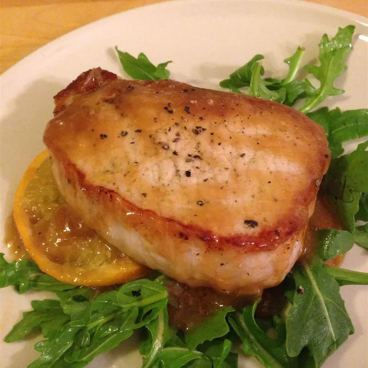

Orange Pork

Orange Pork
Quick, easy and tasty - we double the sauce and pour over baked potatoes and steamed broccoli.
Ingredients
- 1 pound boneless pork chops
- ⅔ cup orange juice
- 11 teaspoon cornstarch
- 2 teaspoons water
Steps
- 1Heat oil in a large heavy skillet over medium heat.
- Cook pork chops until evenly brown on both sides;
- Pour in orange juice, soy sauce and sugar.
- oil for 2 minutes, scraping the bottom of pan.
- In a small bowl, mix together water and cornstarch, and stir into sauce. Return pork to skillet and cook briefly until thickened and heated through.